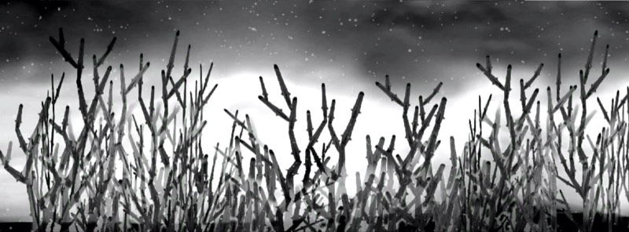
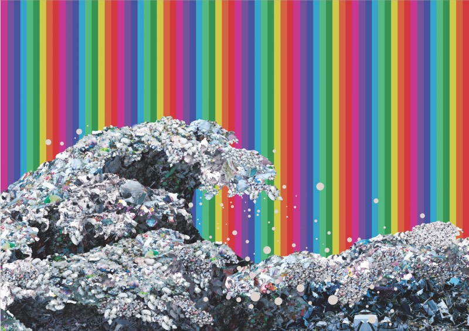
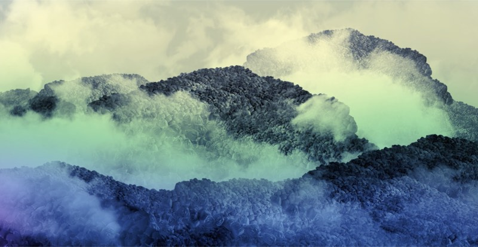
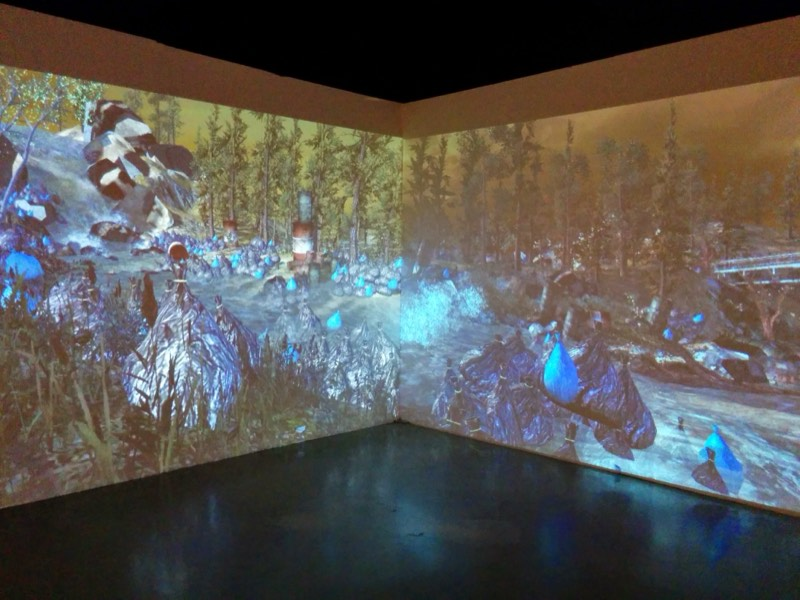
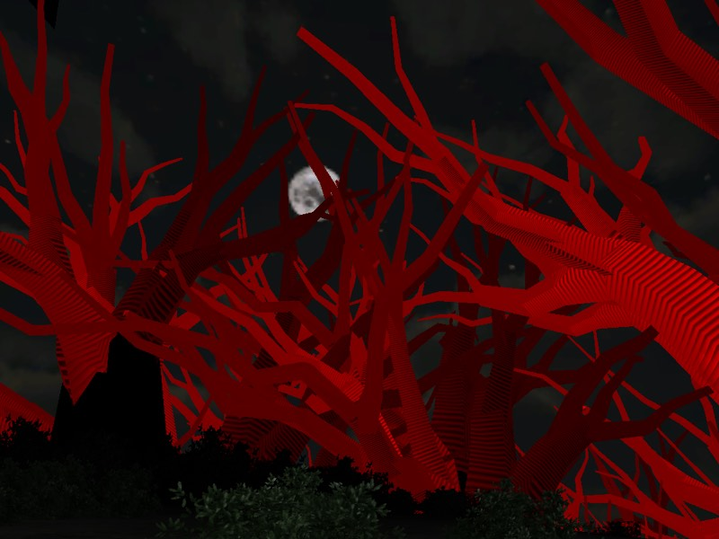
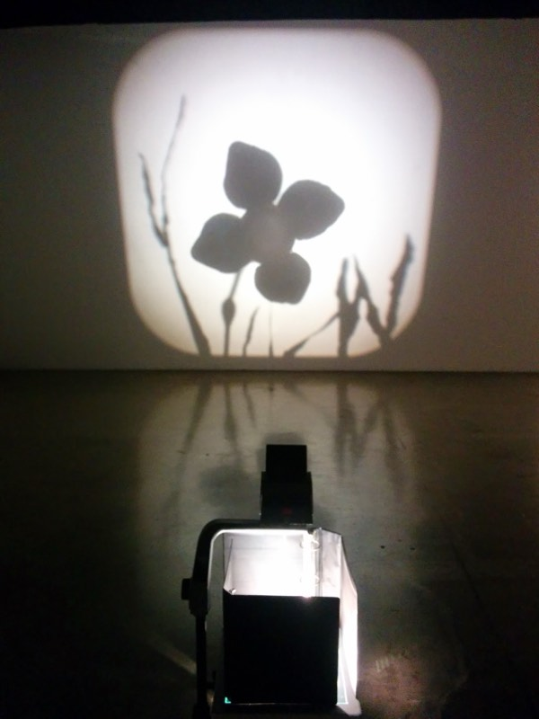
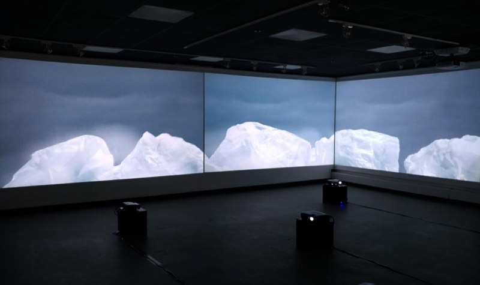

Work / Among the Man-Made
Among the Man-Made
This series explores what it means to live within environments increasingly shaped by human invention. As digital systems become woven into everyday life, the distinction between what is given and what is constructed grows less certain.
Working across video, interactive environments, and virtual game spaces, I construct worlds that exist between the familiar and the artificial. I am interested in moments when something appears strange or improbable yet gradually settles into its own logic, leaving us uncertain where the real ends and the imagined begins.
Each video unfolds as a loop: brief, repetitive, and easily overlooked. Repetition becomes both structure and subject, echoing the recursive patterns of the digital platforms and algorithmic systems that increasingly shape how we see, remember, and relate to one another.
Rather than drawing a clear line between reality and simulation, Among the Man-Made inhabits the space between them, reflecting on how technological systems shape perception and how appearances increasingly influence what we accept as real.








Interactive Work
Video Work
Click a video to play. Year and dimensions for individual works to be added — contact for details.